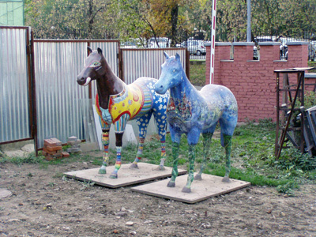

Сверху: здание главного офиса «Яндекса» в Москве. Слева внизу: фирстильный сюр в приемной. Посередине: иногда «Яндекс» делают на воздухе. Справа: мы пришли в пятницу. |
Памятка для соискателя о компании «Яндекс»
Специализация: ключевые интернет-сервисы. Год рождения: 1997. Слоган: «Найдется всё». Конкуренты: «Гугл», «Рамблер». Генеральный директор: Аркадий Волож. Главный офис находится в Москве. Филиалы есть в Петербурге, Екатеринбурге, Киеве, Одессе. В штате около 800 человек. Средний возраст сотрудника 30 лет. Политическая система демократическая. Уровень зарплат выше среднего. Документы для приема на работу: паспорт, свидетельство пенсионного страхования, трудовая, документ об образовании, желательно ИНН. |
Для пешехода главный офис «Яндекса» расположен неудобно, на
берегу Яузы, приблизительно в треугольнике между Курской, Бауманской и
Римской. Съемочная группа Работы.ру шла пешком со стороны Таганки и
заблудилась (хотя мы не раз устраивали в боулинг-клубе на улице
Самокатной свои корпоративы). У центрального входа «Яндекса»
перекуривавший вместе с нами охранник сказал, что отношение к
курильщикам здесь не очень хорошее. Во дворике компании наш ловкий
фотограф классически, пятясь назад с камерой наперевес, упал в клумбу и
вывихнул ногу. О работе в «Яндексе» нам рассказывала Людмила Швецова, руководитель эйчар-службы. Сначала в переговорной «Инь», потом в переговорной «ФРГ». После пиар-менеджер компании Дина Литвинова провела для нас экскурсию по этому пряничному домику.
В красно-оранжево-светло-зеленых интерьерах «Яндекса» мы с фотографом вспоминали фильм про Вилли Вонку: как можно заставить себя работать
на такой «фабрике»? Мы видели забытый в уголке кальян; девушек за
столиком в столовой, которые так же, наверно, хихикали в студенческом
буфете лет пять тому назад; генерального директора — он неспешно шел из
офиса к машине, прижимая к груди ворох рубашек с плечиками. В общем,
условия для этого в «Яндексе» какие-то неприлично хорошие,
домашние. И даже падать там, как выяснилось, мягко. Короче, нам
понравилось. Теперь по пунктам.
Главное на работе в «Яндексе»
«Яндекс» быстро вырос из группы энтузиастов в большую компанию. 65%
нынешних яндексоидов два года назад в нем не работали. При этом компания
сохранила черты стартапа, когда большинство решений принимаются в
процессе обсуждения. Это и есть пресловутая яндексовская демократия,
среди последствий которой есть два очень примечательных.
1. Каждый может вмешаться в твою работу. Почти
все проекты «Яндекса» взаимосвязаны и любые изменения требуют групповой
оценки. Например, вы сделали сервис. Если не показать его службе
маркетинга, он останется без удобной «упаковки». Если не протестировать
его на предмет больших нагрузок, он порушит сервер. И так далее. Поэтому
новые идеи обсуждают все заинтересованные стороны. Ими могут оказаться и
сотрудники из соседнего отдела, и из маркетингового, а еще и
бухгалтерия, если речь идет о монетизации услуги. «Если чувствуем, что
слишком много разных мнений, последнее слово за менеджером проекта. Но
если большинство не согласно, предмет „доспорят“», — говорит Людмила
Швецова. Теоретически любой контентщик «Яндекса», если его аргументы
обоснованы, может высказаться против идеи руководства.
| О свободе и необходимости Комментирует бывший руководитель одного из ключевых проектов «Яндекса», попросивший не называть его имя |
— Демократия мне не мешала. К
тому же я занимался такими сложными техническими вещами, в каких ни один
контетщик не разберется. Другое дело, что демократия начинает мешать
любому стартапу, ставшему гигантом: могут потребоваться более жесткие
управленческие схемы. В «Яндексе» одни и те же программисты часто
занимаются и новыми разработками, и поддержкой уже функционирующих
сервисов. Проблема в том, что эти программисты — гении, и заниматься
поддержкой, рутиной, им скучно. Управлять скучающим гением, с которым
еще и дружишь, сложновато. |
2. Каждый старается вовлекать в свой проект как можно больше коллег. Людмила Швецова рассказывает, что когда ей понадобилась база данных, в которой хранятся все резюме, присылаемые кандидатами в компанию, она не стала спешить с покупкой ПО. Людмила позвала всех менеджеров, которым приходится заниматься наймом в компании. К тем подтянулись технари (вопросы обслуживания и хостинга) и сотрудники финотдела (вопрос рентабельности): «Казалось бы, это проблема эйчаров, мы сами должны решить, где эту базу брать. Но если бы выбранным мною ПО никто не стал пользоваться, это был бы провал. А так мы вместе посчитали, что лучше самим сделать базу кандидатов с учетом наших нужд, чем покупать ее. И ею сейчас все пользуются».
Детали работы, которые еще важнее
На работу и обратно
| Удаленность главного офиса от метро компенсируется бесплатными маршрутками, которые, если верить расписанию, появляются прямо у входа в здание каждые 15 минут с семи утра до полуночи. Они возят сотрудников к станции метро Курская (до Верхней Сыромятнической улицы). |
Вход-выход
|  | Первое, на что обращаешь внимание при входе, — разукрашенные лошадки. Это не аллегорическое изображение сотрудника компании — это покупки гендиректора на благотворительном мероприятии. Сейчас из-за ремонта дороги их убрали в загончик. Раньше стояли у ворот, как львы. |
| Говорят, в «Яндексе» большая проблема с автопарковкой: мало мест. Похоже, для другого транспорта места тоже немного. Я правда, молчу, что вообще первый раз видел велопарковку в российской компании. | |
 |
Чистилка для обуви в вестибюле. Наверно, когда волнуешься перед собеседованием, можно помассажировать ступни (не совет). |
| Приемная.
Входящего встречают секретари-девушки, а не охранники-дядьки. Есть там и
охранники дядьки, вполне себе дружелюбные, сидят они в отдельном
домике. Но мы обращаем внимание соискателя только на эти алые кресла. В
них будущие яндексоиды обычно ждут приглашения на |
В «Яндексе» система электронных пропусков. Чтобы попасть в рабочее помещение, сотрудник прикладывает карточку к двери. Отмечать свой приход на работу не надо. Охрана ненавязчивая. К нашей съемочной группе проявили интерес, только когда мы достали фотоаппарат. Тут начались строгости: нас попросили не снимать людей (без их разрешения), мониторы и рабочие места. На рабочих местах можно раньше времени узнать о проектах и новых технологиях «Яндекса». Я из-за плохого зрения ни одной сенсации, к сожалению, не разглядел. Рассказывать внукам нечего. Рабочие места
| Главный офис «Яндекса» разместился в лофте — переоборудованных цехах ткацкой фабрики. А сотрудники в нем — в оупен-спейсе. Это когда разные отделы и рабочие группы сидят в одном большом помещении и номинально разделены легкими перегородками. Краем объектива нам все-таки удалось подсмотреть рабочий процесс. | |
 |
Открытое рабочее пространство, в частности мониторы, которые у всех на виду, очень дисциплинирует. |
 |
Рабочая группа — ячейка компании. Такая рассадка, конечно, на любителя. Раньше здесь сидели эйчары. Сейчас они переехали в офис на Станиславского. Возможно, теперь сюда посадят вас. |
| Вакансия «в реале». | |
| В чем я хотел убедиться. И убедился. Работать можно на скамейке во дворе. Вай-вай, вайфай. | |
| А здесь хорошо мечтать об увольнении. |
Режим работы
| За исключением сотрудников некоторых служб, например, технической поддержки, график работы пугающе свободный. Желательно, чтобы сотрудник был в офисе с 12:00 до 18:00, сказали нам, главное — справляться с обязанностями. Офис открыт круглые сутки. Работайте в любое время. Пятница, семь часов вечера, гардероб не пустой. | |
 |
Игровая комната. Либо этим людям надоело работать. Либо им в ту пятницу было нечем заняться. Либо это показательное выступление для журналистов. Там за ширмой был еще какой-то тренажер. |
| Школьная перемена. | |
| Для любителей пассивных видов досуга есть библиотека. На фото не библиотека, а просто полка с фильмами, книжками, журналами (замечены «Компьютерра» и «Мини»). К библиотеке нас вести, кажется, побоялись: там действует железное правило — молчать. |
Деньги и социалка
Если оценивать размер
компенсаций на примере бухгалтера — сотрудника, который есть в любой
компании, — то в «Яндексе» зарплаты на высоком уровне. Весной в компании
была открыта вакансия бухгалтера с окладом 800-1500 долларов. Средняя зарплата бухгалтера летом составляла в Москве в среднем 19 тыс. рублей.
Максимальная компенсация в «Яндексе», зафиксированная Работой.ру в открытых источниках, — 3000-5000 долларов у старшего разработчика поиска. Минимальная — 600-900 у дежурного администратора.
Зарплата «белая». Ежегодно индексируется с учетом инфляции и расширения
должностных обязанностей (по инициативе работодателя). Деньги
перечисляются на карточку два раза в месяц.
Прилагается
соцпакет. Медицинский полис помимо прочего включает стоматологические
услуги. Компания выдает сотруднику беспроцентную ссуду для выплаты
начального взноса по ипотеке.
Питание
| Столовая, похожая на детский чилаут в гипермаркете. Больших кубиков не заметили. Питание в «Яндексе» бесплатное. Три раза в день: обед, полдник, ужин. За рабочим столом, как нам сказали, есть не принято. Кофе пить — принято. | |
 |
Полдник. |
| На каждом этаже расположены кухонные уголки с кофемашинами, водопроводами и чем-то еще. Забыл спросить, кто моет посуду. |
Отношение к курильщикам
| Важнейший вопрос. При нас в курилках постоянно кто-то дымил. Ужасная профессия у фотографа. По его подсчетам, в «Яндексе» предпочитают «Кент». | |
 |
Курилка на 3 этаже, в мансарде, с кондиционером, хоккеем. |
| И с украинским. Переводил с помощью «Промта»: «Курение вызывает важность» и «Птицы умирают рано». |
Дресс-код
| В компании мало людей с представительскими функциями и в костюмах. Вся работа в онлайне. Дресс-кода нет, но так, как на фото, увы, никто не одевается. Обычная одежда. |
Язык
Англизированный. Маленькие кухни называют «кофе-поинтами», штатное расписание — «
Наказания
Системы штрафов и тому подобного нет.
Требуется ли писать служебную записку для получения канцелярских принадлежностей?
Не требуется. Ручки-маркеры-ножницы можно свободно получить в АХО.
Можно ли пользоваться аськой и другими интернет-пейджерами?
Можно.
Какие нужны люди
В Яндексе затруднились коротко описать своего идеального кандидата. «Кто он, типичный сотрудник Яндекса? Микки Маус? Супермен? Верблюд?» — «Ну, для начала, он должен быть адекватным», — сказали нам, поглядывая то ли на меня, задающего такой вопрос, то ли на фотографа, час назад упавшего в клумбу.1. Этой компании нужны самостоятельные люди, «бойцы»,
которые не робеют, если надо поставить себе задачу и взять
ответственность за ее решение. «Если вы не готовы выходить за рамки, а
хотите, чтобы вас „подпитывали“ задачами сверху, вам будет у нас
труднее», — предупреждает Людмила Швецова.
2. Жизнь в Яндексе
во многом интуитивна. Нужная для работы информация висит в воздухе.
Инструкции «Что делать» нет: если такую написать для интернет-работника,
завтра она устареет. Яндексоид должен быть ловцом настроений в компании
и отрасли, «считывать» все, что происходит в его рабочем пространстве,
учитывать интересы вовлеченных в процесс лиц.
3. В компанию
стараются не брать на работу руководителей. Людмила Швецова: «Возможно,
это наш минус, но оказалось, что Яндекс практически не умеет нанимать
сотрудников на
Молодой, чуткий и самостоятельный умница, тихий и не совсем прагматичный, — если вы примериваете на себя роль Нео, в Яндексе вам, наверно, повезет.
Какие специалисты
Сейчас заявлены 63 вакансии в трех русских и двух украинских офисах «Яндекса». Основные группы требующихся специалистов: менеджеры проектов,О требованиях к каждому кандидату и условиях труда можно узнать на странице вакансий «Яндекса». О зарплатах — в объявлениях на Работе.ру.
Как нанимают сотрудников
Планы по набору сотрудников все время расширяются, поскольку постоянно появляются новые задачи. «В бюджете мы не ограничены. Набор сотрудников не прекращается. Найдется хороший человек, найдется и новое направление работы», — говорит Людмила Швецова.Рекрутингом в «Яндексе» активно занимаются руководители направлений, которые лучше, чем эйчары, понимают, какие люди им нужны. Сотрудники эйчар-службы помогают с размещением объявлений, разбором резюме, первичными собеседованиями.
Большинство кандидатов приходит в «Яндекс» по рекомендациям сотрудников или откликнувшись на объявление на корпоративном сайте. О предложениях компании можно узнать и на работных сайтах, и в соцсетях «Мой круг», «Линкдин», «Хабрахабр». В большинстве случаев объявление составляется руководителем направления (считайте, вашим будущим начальником), а вместе с ним — обязательное проверочное задание. Эти объявления и тесты и любопытны, и полезны: можно представить себе будущих коллег. Например, вакансия сотрудника отдела продаж в украинском отделении компании.
Если вы отправили резюме с выполненным заданием, оно попадет в базу кандидатов. Очень вероятно, что автор объявления о вакансии ознакомится с вашей заявкой в течение ближайших нескольких часов.
Собеседование обычно проводит руководитель и несколько сотрудников отдела, с которыми предстоит работать. Моделируется типичная яндексовская ситуация. Соискатель вовлекается в трудовой процесс, аргументирует свои предложения. Начинается дискуссия, при этом в переговорную заходят другие сотрудники, и необязательно по делу. «Мучить можем долго. Пессимистичный вариант — около часа. Это значит, что кандидат и компания не подходят друг другу. Оптимистичный может занять целый день». Если вы приехали на собеседование из другого города и это оговорено в объявлении, «Яндекс» может оплатить дорогу.
Результатом такого тщательного, отчасти занудного отбора является низкая текучка в компании. Нам сказали, что в этом году она составила 7%, то есть примерно один уволившийся на 10 человек. При этом каждый день на работу в «Яндексе» выходит новый сотрудник.
Как испытывают новичков
Испытательный срок длится два-три месяца. Среднестатистическому новичку указывают направление, в котором надо двигаться, намечают результаты, которые от него ждут. В компании говорят, что на амбразуру сразу не бросают: «Сначала коллеги „накормят“ максимумом нужных сведений, в отделе, курилке, на внутреннем сайте, дадут почитать устав, где есть ответы на вопросы из серии „Что делать, если сломался компьютер“ или „Как нанять сотрудника“». После чего новичок виртуально рисует должностную инструкцию, сам ставит себе задачи. Постепенно выясняется, что у него лучше получается, на чем сосредоточить усилия.«Когда человек не приживается, он понимает и сам уходит. Себя можно очень некомфортно чувствовать в системе, с которой у тебя ничего не складывается», — говорят в эйчар-службе компании.
В 2007 году в «Яндексе» сошли с испытательной дистанции 2 сотрудника. «Один не прошел испытание у нас, у другого не прошли испытание мы». Всего в этом году принято на работу около 350 человек.
Холодный душ
Если вы отправили резюме и результаты теста, но «Яндексу» все это не
понравилось, вам пришлют уведомление. На фоне других работодателей это
приятная неожиданность. Правда, текст отказа шаблонный, что плохо, но,
наверно, неизбежно, учитывая длину очереди кандидатов.
| Незачет Письмо из «Яндекса», полученное отверженным кандидатом на позицию менеджера по работе с интернет-медиа (так там называют пиарщика). |
Здравствуйте. Спасибо за интерес к нашим вакансиям. Мы внимательно изучили Вашу анкету. Несмотря на то, что Вы, несомненно, обладаете некоторым интересующим нас опытом, в настоящий момент мы не готовы предложить Вам должность «Менеджер по работе с интернет-медиа». Тем не менее, Ваша анкета будет сохранена в нашей базе данных, и, если Вы не возражаете, мы будем рады вернуться к рассмотрению Вашей кандидатуры на вакансии, которые могут открыться в нашей компании в будущем. С уважением, Cлужба персонала www.yandex.ru |
Источник http://www.rabota.ru/guide/company/yandex.html
© Prof1983 2007-2013
28.10.2010 - 13.06.2013